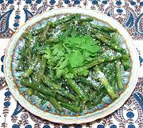

|
Green Beans with Olive OilPalestine - Lubiyeh bil Zeit | ||||
| Serves: Effort: Sched: DoAhead: |
4 side *** 1 hr Yes |
This simple side dish or mezzeh is very popular in Syria, and also (with variations) in the rest of the Levant. It can be served warm or at room temperature, and reheats easily. | |||
|
|
1 4 1/2 1-1/2 1/2 ----- tt tt |
# cl c T t --- |
Green Beans Garlic Cilantro Olive Oil Salt -- Finish Salt (2) Olive Oil, ExtV |
Prep: - (25 min)
|